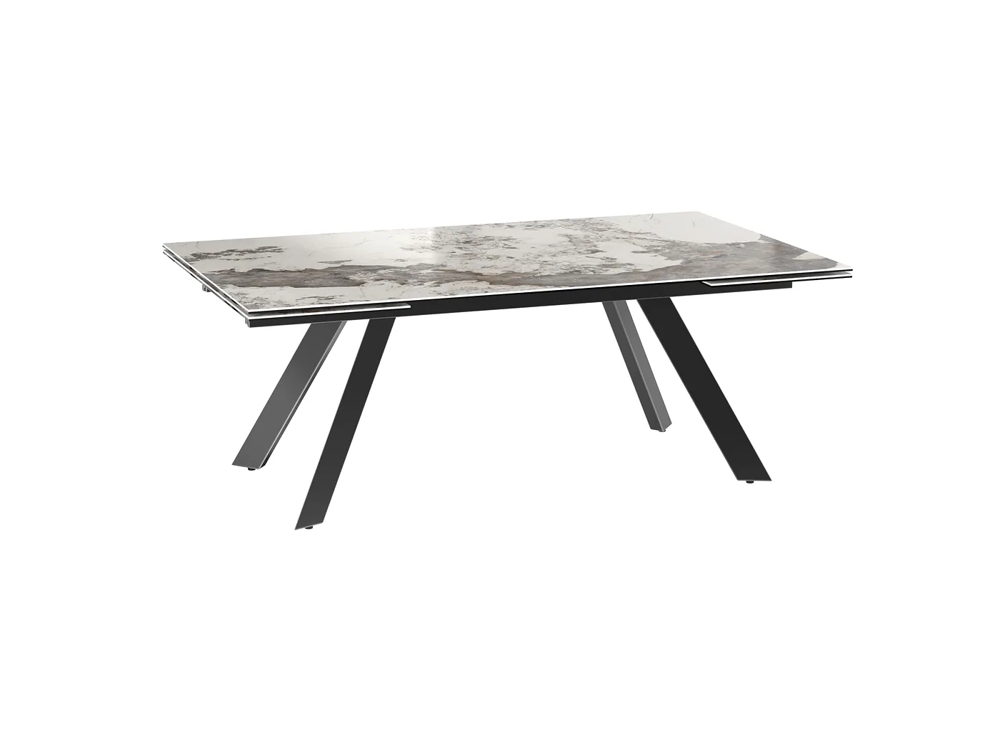
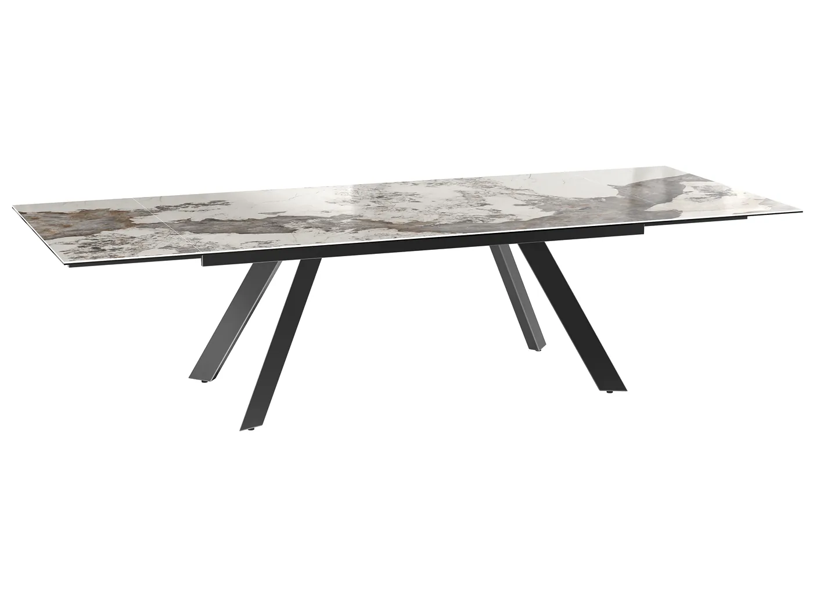
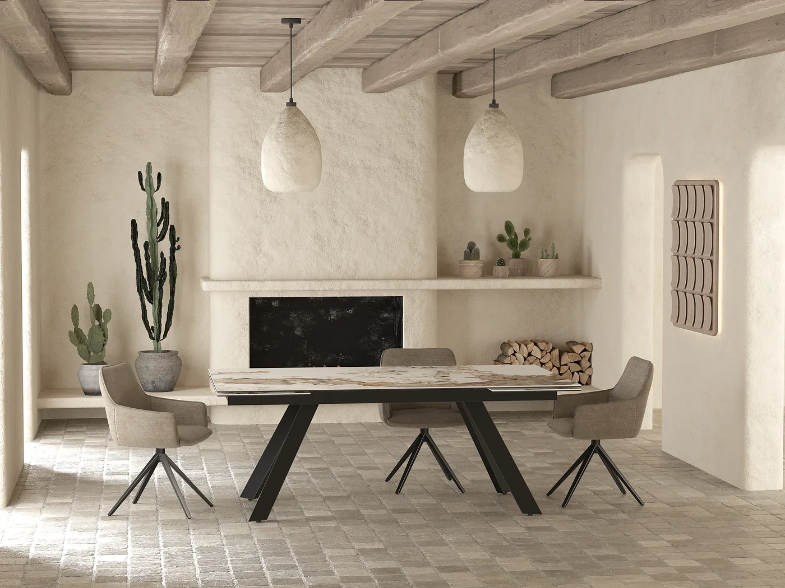

Akante · Table de repas extensible
Akante Ontario
-

Grande Ontario, fermée. -

Grande Ontario, rallonges ouvertes. -

Grande Ontario dans une salle à manger.
1 / 3
Photos : Akante. Visuels du fabricant, coloris non contractuels.
Une table rectangulaire à deux rallonges latérales indépendantes, sur quatre pieds inclinés en acier noir. Plateau en céramique, en trois longueurs : 150, 190 ou 200 cm fermée.
- Deux rallonges latérales indépendantes
- Trois longueurs : de 150 à 200 cm, de 230 à 300 cm ouverte
- Jusqu’à 12 places en Grande Ontario
- Plateau en céramique collée sur verre
- Dimensions, plateau et finitions au choix
Ou appelez le magasin : 064 46 07 72
Caractéristiques
Fiche technique.
D’après la fiche du fabricant. Dimensions en centimètres.
| 150 cm | 150 × 100 cm, 230 × 100 cm ouverte — jusqu’à 6 places, 8 ouverte |
|---|---|
| 190 cm | 190 × 100 cm, 270 × 100 cm ouverte — jusqu’à 8 places, 10 ouverte |
| 200 cm (Grande Ontario) | 200 × 120 cm, 300 × 120 cm ouverte — jusqu’à 8 places, 12 ouverte |
| Hauteur | 76 cm |
| Mécanisme | Deux rallonges latérales indépendantes, de 40 cm chacune (50 cm sur la Grande Ontario) |
|---|---|
| Plateau | Céramique de 3 ou 6 mm collée sur un verre de 8 mm |
| Piétement | Acier thermolaqué, patins réglables |
| Poids net | 101 kg (150 cm) ou 112 kg (190 cm) |
| Céramique | Acier, Titane, Argile, Chêne clair, Silver, Travertin, Marbre Calcatta, Marbre Fiorentino, Marbre mat, Marbre Doro ; Grande Ontario : Marbre Calcatta, Fiorentino, Doro ou Marquina |
|---|
Vos questions
Avant de choisir Ontario.
Peut-on n’ouvrir qu’une rallonge ?
Oui : les deux rallonges latérales sont indépendantes.
Voir aussi
Continuer la visite.
Parlons de votre projet.
Notre équipe vous aide à choisir les dimensions, le plateau et les finitions qui conviennent à votre pièce. Parking facile d’accès, avec ou sans rendez-vous.
- Lundi
- 13h30 – 18h30
- Mardi au samedi
- 10h30 – 18h30
- Dimanche
- Fermé
- Téléphone
- 064 46 07 72
- Livraison
- Par nos soins, dans le Hainaut (Binche, La Louvière, Mons, Charleroi…) et la province de Namur
Pour un projet plus loin, ailleurs en Belgique ou à l’étranger : parlons-en.